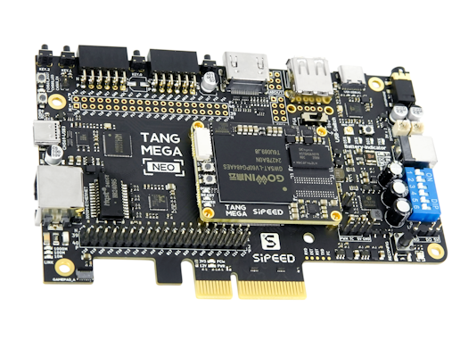

中文
中文Tang Mega 60K Dock
更新历史
| 日期 | 版本 | 作者 | 更新内容 |
|---|---|---|---|
| 2025-09-25 | v0.3 | Serika |
|
| 2024-09-25 | v0.2 | Serika |
|
| 2024-06-25 | v0.1 | Serika |
|
产品概述
Tang Mega 60K 使用 22nm 制程 GW5AT-LV60P484A FPGA 芯片，具有 59904 个查找表单元和 118 个 DSP 单元。含有四个速度范围在 270Mbps ~ 8.8Gbps 高速收发器，适合用于 PCIe 等高速口传递数据。此外，芯片含有硬核 PCIe 和 MIPI D-PHY控制器，在使用 PCIe 的时候消耗更好的资源，并且得到更佳的性能。适用于高速通信、协议转换、高性能计算等场合。
60K Dock 和 138K Dock共用一套底板（TANG MEGA NEO），因此两者的外设完全相同。相比138K Dock，60K Dock具有较少的逻辑资源和更低的价格，并且包含MIPI D-PHY 收发器（138K仅有MIPI D-PHY RX）。这不仅能进一步降低高速通讯的成本，还带来了更好的影像处理系统集成的兼容性。
淘宝购买链接：点我
板卡特点
- 中等容量 LUT4
- 512MiB DDR3 内存
- PCIe2.0 x 1*
- USB3.0 x 1(5Gbps)
- MIPI D-PHY收发器
- HDMI TX/RX x 1
- 千兆以太网 x 1
- 板载3.7V锂离子电池（1S）充放电管理电路
注意：由于 GW5AT-LV60 和 GW5AST-LV138 的 SERDES 部分引脚排列不完全相同，因此本底板（NEO DOCK）
最初是为 GW5AST-LV138 设计的。因此，对于 GW5AT-LV60，虽然 PCIe AIC 金手指已扇出所有 SERDES 通道，
但由于 GW5AT-LV60 上的 1 号通道和 3 号通道互换，PCIe 目前只能工作在 x1 模式下。
此问题可能在未来通过高云软件更新得到修复。
淘宝购买链接：点我
产品外观
硬件参数
硬件框图
TBD
核心板参数
| 项目 | 参数 | 补充 | ||||||||||||||||||||||||||||||||||||
|---|---|---|---|---|---|---|---|---|---|---|---|---|---|---|---|---|---|---|---|---|---|---|---|---|---|---|---|---|---|---|---|---|---|---|---|---|---|---|
| FPGA 芯片 | GW5AT-LV60PG484A |
|
||||||||||||||||||||||||||||||||||||
| 内存 | 512MiB DDR3 | 512MiB x 1 | ||||||||||||||||||||||||||||||||||||
| Flash | 64Mbits Flash x 1 | 查看 烧录到Flash | ||||||||||||||||||||||||||||||||||||
| 调试接口 | JTAG + UART | JST SH1.0 8Pins 连接器 | ||||||||||||||||||||||||||||||||||||
| 整体封装 | 35mm x 45mm 大小 | BTB连接器连接核心板和底板 |
底板参数
| 项目 | 数量 | 备注 |
|---|---|---|
| LED | 4+8 | 4个电量指示灯+8个PMOD外接 |
| WS2812 | 1 | 与 aRGB 灯带连接器同数据引脚 |
| Buttons | 3+1 | 3个用户按键+1个reconfig按键 |
| PCIe | 1 | 4-lane @ 5Gbps，CH569 16bit HSPI |
| USB3 | 2 | SuperSpeed @ 5Gbps |
| GbE | 1 | 千兆以太网 |
| DVI RX | 1 | 与 DVI TX 互相占用 |
| DVI TX | 1 | 与 DVI RX 互相占用 |
| PMOD | 2 | 与上边的40P排针和DVP复用 |
| ADC | 2 | 2个差分输入通道 |
| aRGB CONN. | 1 | 与 WS2812 同数据引脚 |
| DVP Interface | 1 | 与上侧的40P排针和PMOD复用 |
| RGB Interface | 1 | 支持 RGB888 屏幕 |
| MIC ARRAY Interface | 1 | 支持连接 Sipeed 6+1 麦克风阵列 |
| SD Slot | 1 | 1-bit SDIO/MMC 或SPI模式 |
| BATT CONN. | 1 | 支持3.7V锂电池，自带充放电管理 |
| PWM FAN CONN. | 1 | 支持5V PWM风扇，支持测速 |
| Speaker CONN. | 2 | 支持两个3W扬声器 |
| 3.5mm Headphone CONN. | 1 | 立体声输出，无Mic |
| MS5351 | 1 | 为 Serdes 提供 RefClk；通过底板上的串口来控制输出 |
| USB JTAG & UART | 1 | 支持烧录 FPGA，并且提供串口功能 |
| 40P 排针 | 2 | 上侧的40P排针与PMOD和DVP复用 |
| 电源开关 | 1 | 长按2s切换开关机状态 |
| 12V DC | 1 | 规格DC5521 |
硬件资料
板卡规格书
板卡原理图
PCB BOM
板卡尺寸图
板卡 3D 模型
部分芯片手册
全引脚约束
上手使用
注意60K目前已经被教育版支持，需要下载 V1.9.11.03 或更新版本的教育版IDE使用。 商业版IDE需要 ≥V1.9.10.03。
如需将码流下载到flash中固化，推荐使用 exFlash Erase,Program thru GAO-Bridge 5A 模式（需要≥V1.9.10.03），或者 exFlash Erase,Program thru GAO-Bridge Arora V （需要≥V1.9.12）。
推荐使用单独的 1.9.12 SP1 Programmer（aka. 云源编程器），在 云源软件商业版 的页面可以找到。这个单独的Programmer兼容性更好。
如果需要使用商用版IDE，Lic 可以在高云官网申请，或者使用Sipeed提供的在线Lic服务，在IDE中选择Float Lic，填写以下信息即可：
---Server 01---
ip: 106.55.34.119
port: 10559
如果上面的IP不能工作, 尝试使用 "gowinlic.sipeed.com" 域名对应的IP。
安装 IDE 点我
例程代码 github
其他学习资源
- 在线免费教程：Verilog 教程（学习Verilog）
- 在线免费 FPGA 教程：Verilog （英文网站）
- Verilog 刷题网站：HDLBits（英文网站）
- 在线高云半导体可参考视频教程：点击这里
交流方式
- 交流论坛: maixhub.com/discussion
- QQ 交流群：834585530
- 直接本页下方留言
- 商业邮箱 : support@sipeed.com
注意事项
| 事项 | 注意事项 |
|---|---|
| 芯片型号 | Tang Mega 60K 使用的 FPGA 芯片具体型号是 GW5AT-LV60PG484A 在 IDE 中选择封装型号 PBG484A & Device Version: B |
| 静电 | 请避免静电打到 PCBA 上；接触 PCBA 之前请把手的静电释放掉 |
| 容忍电压 | 使用 GPIO 排针引脚进行外部通信时，要确保 IO 电压是 3.3V，过高的电压会永久损坏 PCBA |
| FPC 座子 | 在连接 FPC 软排线的时候，请确保排线无偏侈地完整地插入到排线中
在通电之前请仔细核对两端FPC 连接器的 1号PIN 的方向是否正确 |
| PCIe 金手指 | 在测试 PCIe 金手指时候，确保是主机端与板卡都处于关机或者未通电的状态，否则可能会因为插入过程中的易位导致金手指短路。 |
| 插拔 | 请完全断电后才进行插拔操作 |
| 避免短路 | 请在上电过程中，避免任何液体和金属触碰到 PCBA 上的元件的焊盘，否则会导致路，烧毁 PCBA |
联系
Tang Mega 60K 可以在多种场景实现客户不同方面的需要，技术支持和商业合作请联系邮箱 support@sipeed.com
常见问题
板子通电后底板只亮了四个指示灯，SOM的指示灯没亮
- 请检查是否开启了板子的电源，PWR按键（HDMI接口旁边）长按2S开启电源；
板子通电后，底板Battery-Indicator指示灯在闪烁
- 正常现象，通常是最后一颗LED（靠近12V DC连接器）在闪烁；
- 当板子连接3.7V锂电池时，这些LED将作为电池电量指示灯。
长按PWR按钮 2s 后，底板指示灯全部熄灭又依次亮起
- 检查自己的供电方式，出现这种情况意味着供电能力不足；
- 解决方案（任选一种）：
a. 同时连接板子的USB-3.0和USB-DEBUG进行供电，即双5V USB电源供电；
b. 连接12V DC电源对板子进行供电，如使用配件中的USB-C转12V DC连接器，则需要连接有12V输出能力的PD电源；
c. 连接3.7V锂电池对板子进行供电，注意电池电压必须≥3.6V且连续放电能力≥600mA。
板子电源指示灯亮了，Programmer提示No USB Cable Connection
- 请检查USB线是否正确接入标记为 DEBUG-USB2 的USB-C连接器
- 尽量避免使用机箱前面板的USB连接器和没有独立供电的USB HUB
- 检查自己是否正确安装FT2232的驱动：出现USB Serial Converter A/B
通常情况下Windows会在联网后自动安装相应驱动。如果想要手动处理，请前往相关问题查看相关内容。
IDE找不到型号GW5AT-LV60PG484A
- IDE版本过老，必须更新商业版IDE ≥ 1.9.10.03，或教育版IDE ≥ 1.9.11.03。
如何下载到外部 FLASH（固化）
- 进行如下选项设置：
- 检查拨码开关的位置，正确的位置如下图所示：
烧录后没反应或者引脚现象不对
- 首先确定IDE选择了正确的型号 GW5AT-LV60PG484AC1/10，下图中的每一个参数都要求一致；
- 然后检查自己的代码和对应的仿真波形是否满足要求，使用云源软件（GOWIN IDE）的GAO工具可以进行片上仿真。更多详情请参考GOWIN文档SUG100中关于GAO工具的描述。